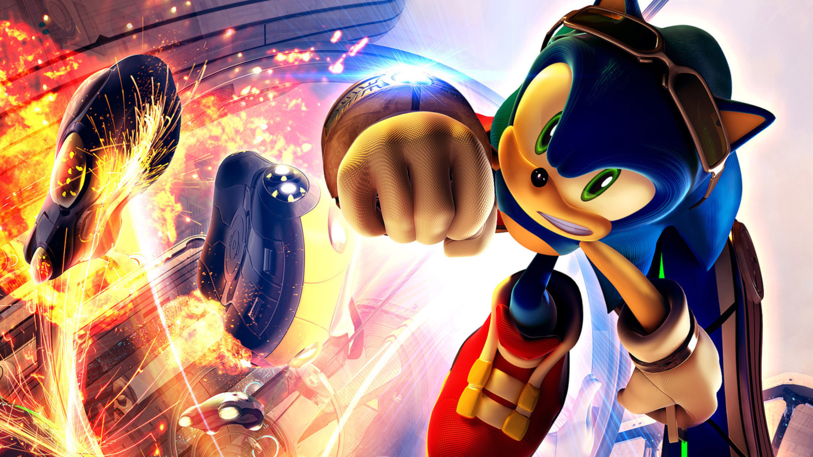
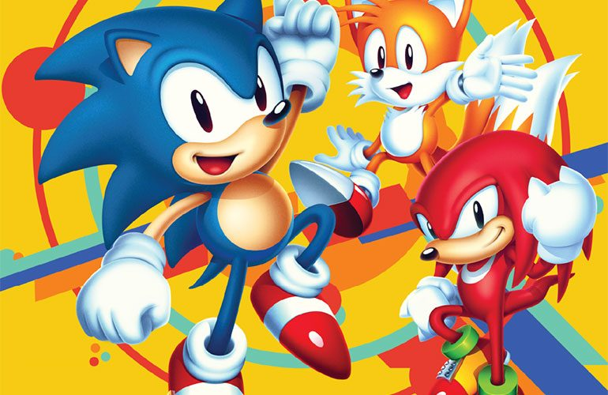

História do jogo SONIC e sua Essência
A Origem

Sonic, o ouriço azul, estreou em 1991 como um dos personagens mais icônicos dos videogames. Sua história começa na pacífica Green Hill Zone, onde animais vivem harmoniosamente. No entanto, a tranquilidade é interrompida quando o Dr. Robotnik, também conhecido como Dr. Eggman, surge como o vilão determinado a dominar o mundo. Sonic se torna o herói improvável, com a missão de derrotar Robotnik e salvar seus amigos.
A Essência de Sonic
A velocidade é o aspecto central do gameplay de Sonic. Os jogadores assumem o controle de Sonic ou de seus amigos, como Tails e Knuckles, em níveis repletos de ação. O objetivo é correr por cenários vibrantes, coletar anéis dourados e desviar de obstáculos perigosos. A adrenalina de superar desafios a alta velocidade é uma marca registrada da franquia Sonic.
Expansão da Franquia
Ao longo dos anos, a franquia Sonic expandiu-se para uma ampla gama de jogos e gêneros. Além dos jogos principais, foram desenvolvidos spin-offs emocionantes, como corridas de kart e jogos de tabuleiro. Aventuras em mundos tridimensionais também foram exploradas, adicionando uma nova dimensão à jogabilidade de Sonic.

Características Cativantes
Sonic é celebrado por sua jogabilidade acessível, adequada para jogadores de todas as idades. Além de Sonic, personagens carismáticos como Tails, Knuckles e Amy trazem diversidade e histórias envolventes ao universo do jogo. As trilhas sonoras icônicas e cativantes acompanham as aventuras de Sonic, proporcionando uma experiência imersiva e memorável.
Pronto para a Aventura?
Prepare-se para correr em alta velocidade, explorar cenários deslumbrantes e derrotar os planos diabólicos do Dr. Robotnik. Sonic está pronto para mais uma jornada épica, e você pode se juntar a ele nessa emocionante aventura. Insira-se no mundo de Sonic e experimente a emoção que só esse ouriço azul é capaz de proporcionar. Seja parte da história e embarque em uma aventura inesquecível com o Sonic!